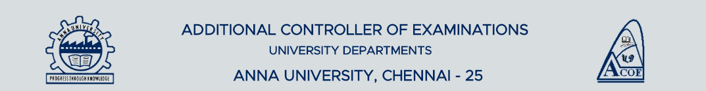

ANNA UNIVERSITY
Home
Map
Details
About Anna Univeristy
Contact
Student Registration
ACOE BUILDING
Consequent to the restoration of the two tier Academic and Administrative System based on the Syndicate vide Resolution No.179.6.2, the Office of the Additional Controller of Examinations, University Departments, Anna University was established with effect from 02.01.2007. This office is carrying out the Examinations related activites for UG/PG programmes conducted in the University Departments of four campuses.

ACOE LOGO